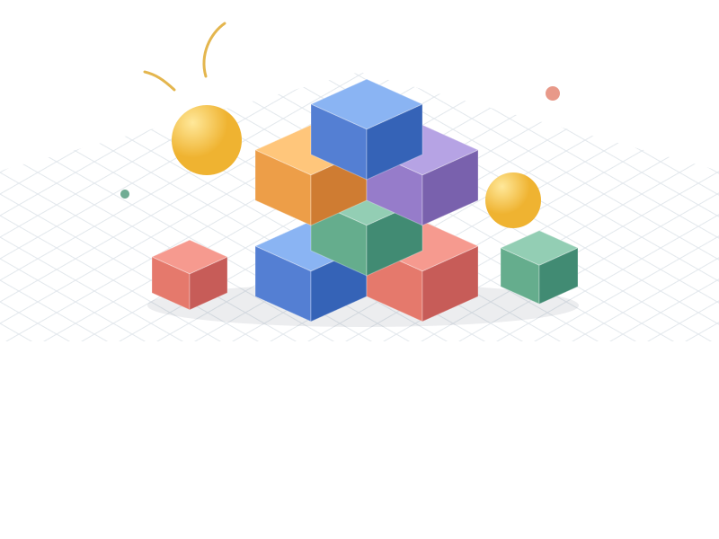

JITTER PHYSICS 2
A little code.
A lot of motion.
Bring your world to life with a fast, lightweight 3D physics engine. Written entirely in C#, ready for your next .NET project.
Pure C# · .NET 8+ · MIT licensed

Give physics a little push.
Five scenes. Real physics. Right in your browser.
SMALL ENGINE. BIG POSSIBILITIES.
Built for things that move.
From your first falling box to a world of connected, colliding, and deforming objects.
Just C#. Just works.
No native dependencies or P/Invoke. Add the NuGet package and start simulating on .NET 8 or later.
Make the connection.
Rigid bodies, joints, and impulse-based dynamics, with substeps for stable simulations.
Go beyond rigid.
Bring cloth and deformable objects into the same world as your rigid bodies.
FROM ZERO TO GRAVITY
Your first world starts here.
Install Jitter2, add a body, and let the simulation take over. The tutorial walks you through the rest.
Build your first simulation →dotnet add package Jitter2using Jitter2;
using Jitter2.Collision.Shapes;
using Jitter2.LinearMath;
using var world = new World();
var box = world.CreateRigidBody();
box.AddShape(new BoxShape(1, 1, 1));
box.Position = new JVector(0, 5, 0);
world.Step(1.0f / 60.0f);